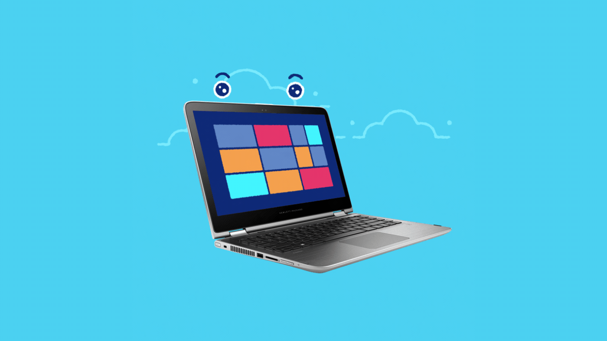
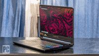
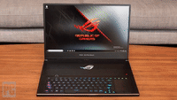
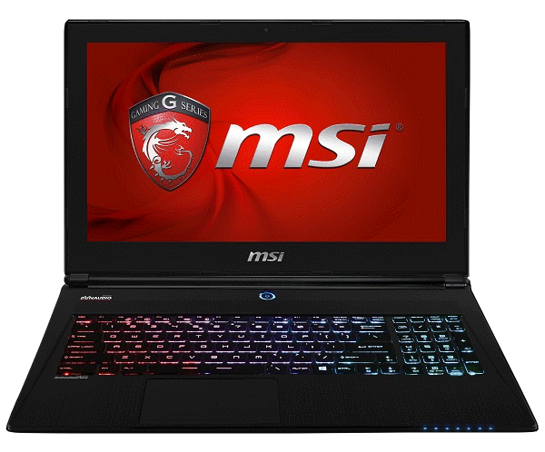

1. DELL Rendimiento Personalizable para Todas las Necesidades
La marca Dell se destaca en el mercado de computadoras de escritorio debido a su enfoque en la personalización. La serie XPS Desktop 8950 de Dell es una excelente opción para aquellos que desean un rendimiento potente y opciones de CPU Intel y AMD. Con precios que van desde los $750 hasta más de $3,000 dólares, las computadoras Dell XPS 8950 se adaptan a las necesidades y presupuesto de cada persona. Además, Dell ofrece opciones de actualización, como tarjetas gráficas discretas y refrigeración líquida, lo que las hace ideales tanto para trabajar como para jugar.
2. LENOVO Potencia para los Jugadores

Si eres un apasionado de los videojuegos, la marca HP tiene la opción perfecta para ti. La serie HP Omen 45L ofrece computadoras de escritorio diseñadas específicamente para satisfacer las demandas de los jugadores. Estas computadoras son fáciles de actualizar, lo que significa que puedes mantenerlas al día con los últimos componentes y tecnologías. Con una tarjeta gráfica de excelente calidad y diseños renovados, como el HP Omen 15, HP es una elección popular entre los gamers que buscan un rendimiento excepcional.
3. APPLE Elegancia y Desempeño para los Creativos

Apple es conocida por su enfoque en el diseño y la calidad, y sus computadoras de escritorio no son una excepción. Las computadoras Macintosh ofrecen un rendimiento potente y una experiencia de usuario intuitiva. Con procesadores de última generación, pantallas de alta resolución y un sistema operativo optimizado, las computadoras de escritorio de Apple son ideales para profesionales creativos que trabajan con diseño gráfico, edición de video y música. Además, la integración con otros dispositivos de Apple crea un ecosistema sin problemas para una experiencia de usuario fluida.
4. LENOVO Innovación y rendimiento excepcionales

Lenovo es una marca reconocida a nivel mundial por su innovación y calidad en el campo de las computadoras de escritorio. Sus productos se destacan por su rendimiento excepcional y su capacidad de adaptarse a las necesidades de los usuarios. Las computadoras de escritorio Lenovo ofrecen potentes procesadores Intel y AMD, así como opciones de GPU Nvidia, lo que las convierte en una opción ideal tanto para el trabajo como para el juego. Además, Lenovo se caracteriza por su durabilidad y confiabilidad, lo que garantiza una larga vida útil de sus productos.
5. ACER Excelente relación calidad-precio

Acer es una marca reconocida por ofrecer una excelente relación calidad-precio en sus computadoras de escritorio. Sus productos combinan un rendimiento sólido con precios asequibles, lo que los convierte en una opción popular entre los usuarios que buscan un equilibrio entre prestaciones y presupuesto. Las computadoras de escritorio Acer están diseñadas para satisfacer las necesidades diarias de los usuarios, ya sea para tareas básicas o para aplicaciones más exigentes. Con una amplia gama de modelos disponibles, Acer ofrece opciones para todo tipo de usuarios.
6. ASUS Potencia y diseño para los entusiastas de los juegos

Si eres un entusiasta de los juegos, Asus es una marca que no puedes pasar por alto. Sus computadoras de escritorio están diseñadas pensando en los jugadores, ofreciendo potentes componentes y un diseño atractivo. Las computadoras de escritorio Asus se destacan por sus potentes procesadores, tarjetas gráficas de última generación y una amplia capacidad de almacenamiento. Además, Asus se preocupa por el diseño, creando equipos estéticamente agradables que complementan cualquier configuración de juego. Si buscas una experiencia de juego inmersiva, Asus es una marca a considerar.
7. MSI Tecnología y potencia para los gamers

MSI es una marca reconocida por su compromiso con la calidad y el rendimiento. Sus computadoras de escritorio están diseñadas específicamente para los jugadores y entusiastas de la tecnología. Ofrecen potentes procesadores, tarjetas gráficas de alta gama y una amplia capacidad de almacenamiento. Además, MSI se destaca por su innovación en el diseño y la personalización, permitiendo a los usuarios adaptar sus sistemas según sus preferencias y necesidades.